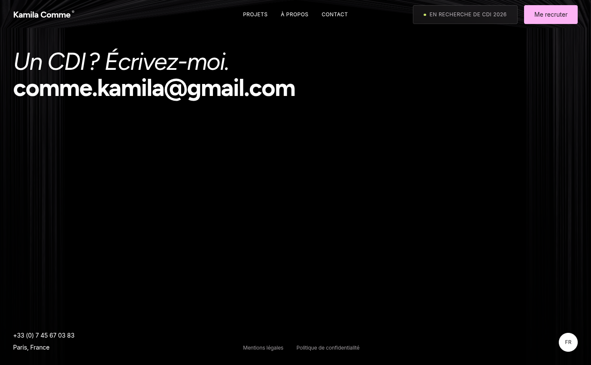
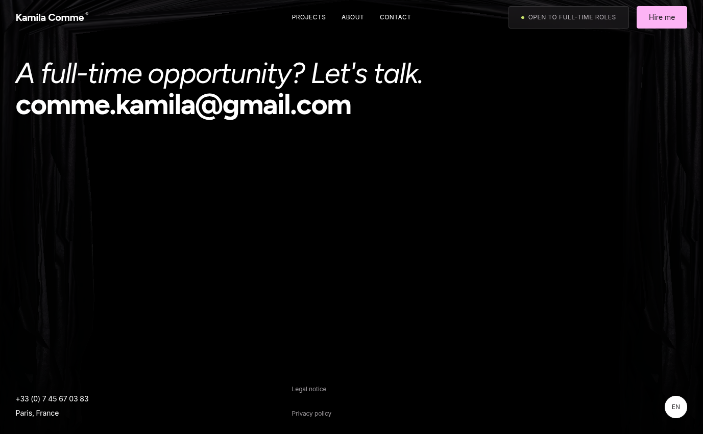
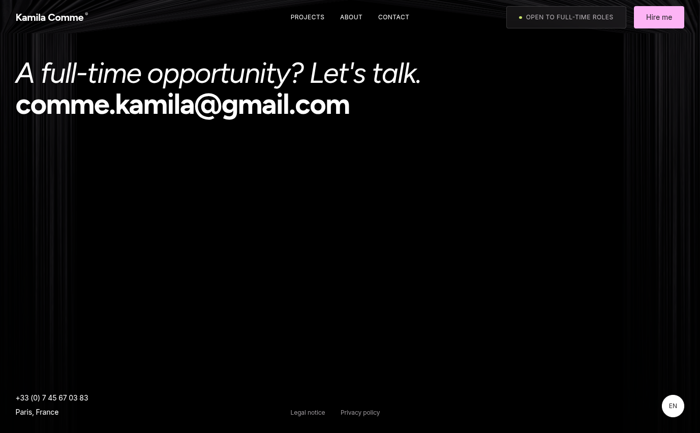
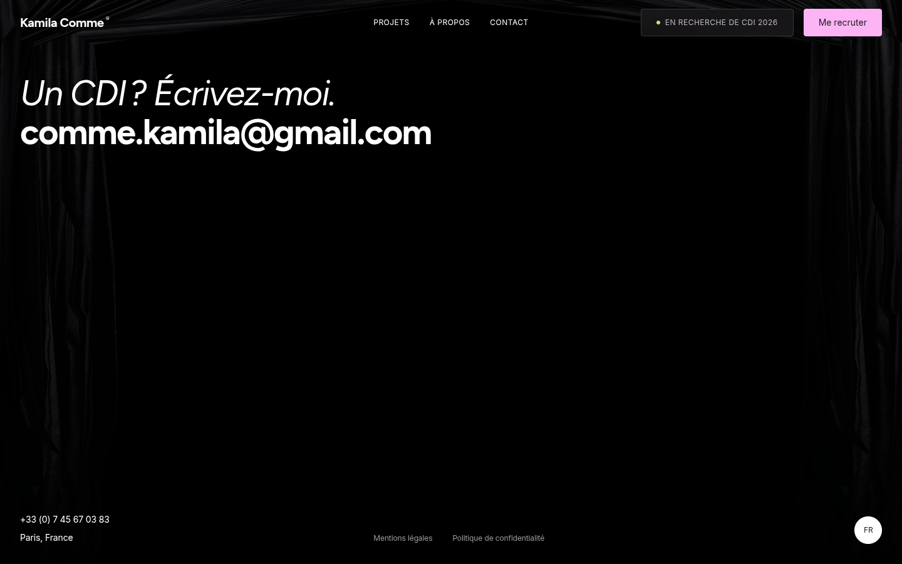
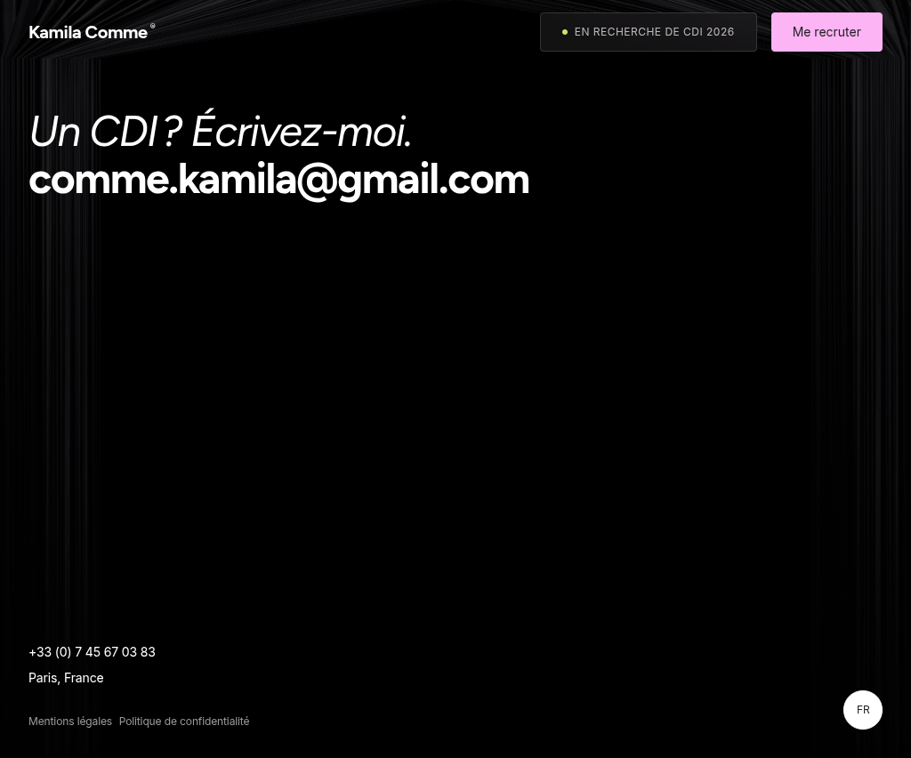
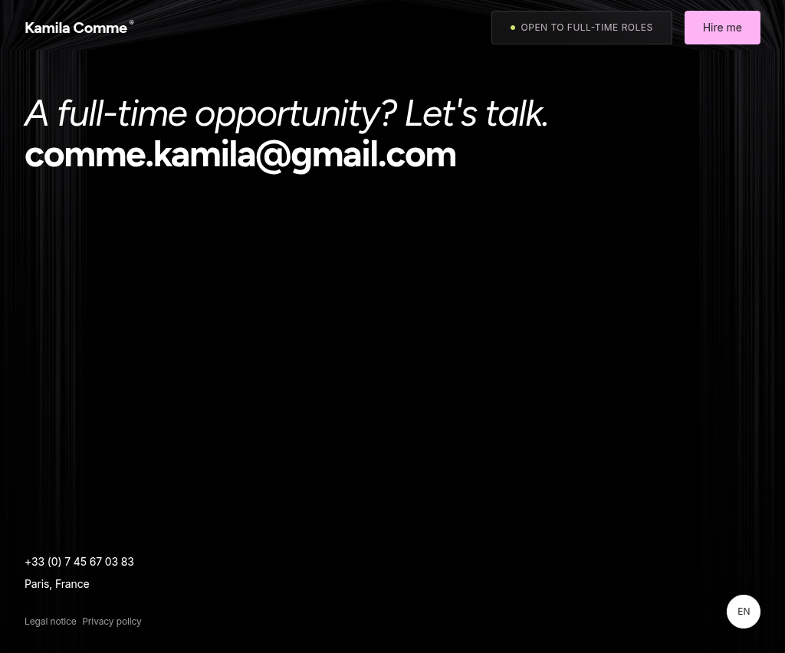
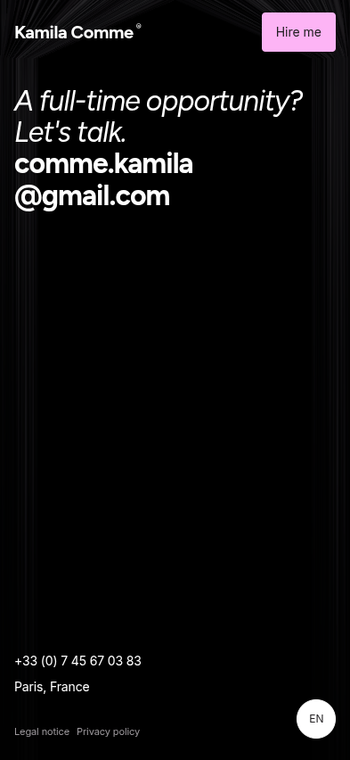

This review isolates one `fitFooter()` state-reset issue. Resizing tablet → desktop left the nested link row vertical; a refresh rebuilt it horizontally. The fix explicitly restores the nested row in each existing profile branch. The Footer’s normal content, spacing, typography, shared gutters and curtain owner remain unchanged.



These captures are real Chromium renders after settling the Footer geometry. The legal links are aligned horizontally at every tested width; their existing profile-specific gaps are preserved. Screenshots use the curtain’s existing reduced-motion static renderer at settled progress for a repeatable comparison; the focused regression run also checks the mounted curtain instance and finite progress in normal motion while resizing.




| Locale / viewport | Direction | Gap | First link (x, y) | Second link (x, y) |
|---|---|---|---|---|
| FR · resize result · 1377×852 | row / row | 30.6px | 566.19, 803.59 | 690.86, 803.59 |
| EN · resize result · 1377×852 | row / row | 30.6px | 571.59, 803.59 | 669.89, 803.59 |
| FR · desktop · 1440×900 | row / row | 32px | 596.30, 850 | 722.38, 850 |
| EN · desktop · 1440×900 | row / row | 32px | 601.69, 850 | 701.39, 850 |
| FR · tablet · 1024×852 | row / row | 7.6px | 32, 802 | 133.67, 802 |
| EN · tablet · 1024×852 | row / row | 7.6px | 32, 802 | 107.30, 802 |
| FR · narrow tablet · 500×600 | row / row | 4.8px | 32, 550.06 | 130.88, 550.06 |
| EN · narrow tablet · 500×600 | row / row | 4.8px | 32, 549.53 | 104.50, 549.53 |
| FR · mobile · 393×852 | row / row | 8px | 16, 811.63 | 110.23, 811.63 |
| EN · mobile · 393×852 | row / row | 8px | 16, 811.63 | 86.06, 811.63 |
| FR · mobile · 320×568 | row / row | 8px | 16, 527.78 | 110.23, 527.78 |
| EN · mobile · 320×568 | row / row | 8px | 16, 527.78 | 86.06, 527.78 |
The two numbers in “Direction” are the outer Footer legal group and its nested link row. The prior faulty resized state measured outer row / inner column; after the correction both are row. Exact measurements for every FR/EN capture are in the JSON file.